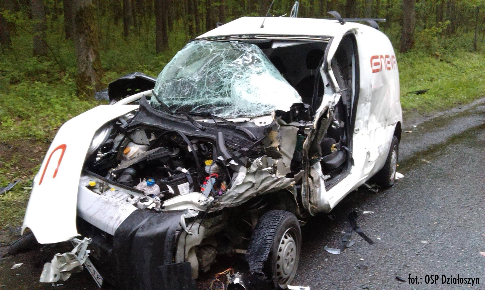
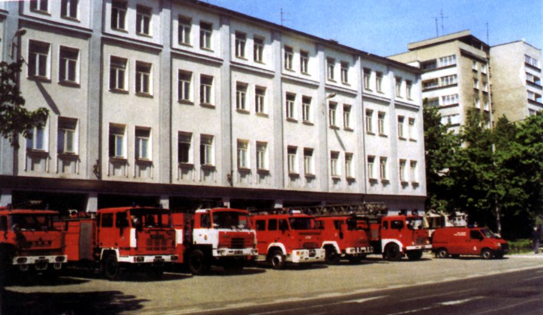

28 Listopada 2016 | Gdynia, Starochwaszczyńska
W godzinach porannych na terenie pobliskiej stacji paliw dochodzi do zderzenia drogowego z udziałem cysterny przewożącej olen napędowy i samochodu dostawczego, którym podrózowało pięc osób ( robotnicy z pobliskiej budowy ). W wyniku kolizji doszło do silnego wycieku płynów eksploatacyjnych z rozbitego busa, oraz do rozszczelnienia zaworu w naczepie cysterny - olej napędowy wycieka na parking ( stanowi to zagrożenie wybuchu i pożaru + kolejne zagrożenie eksplozji spowodowane dystrybutorami i zbiornikami z LPG i paliwami na terenie stacji paliw ).
Poszkodowane zostają dwie osoby ( kierowca i pasażer busa, który podróżowali z przodu ). Są oni nieprzytomni - z racji, iż jest możliwość wybuchu/eksplozji pierwszym co robimy zaraz po zabezpieczeniu miejsca zdarzeniu, zabezpieczeniu siebie i powiadomieniu służb ratowniczo-porzadkowych to podejmujemy ewakuacje obu męźczyzn z busa ( przy pomocy mniej rannych pasażerów, żebych ich czymś zająć - zapewnia to komofrt psychiczny ). Następnie po odpowiedniej ewakaucji ich do strefy bezpiecznej ( kilkanaście metrów od miejsca wypadku ) ukladamy ich w odpowiednej pozycji i przystepujemy do sprawdzenia podstawowych funkcji życiowych, czyli oddechu i krążenia. Dodatowo sprawdzamy jakie obrażenia posiadają poszkodowani i probujemy je opatrzyć wyposażeniem, które mamy w apteczce. Jesli nie mają oni oddechu lub krążenia to postępuejmy według znanych zasad pierwszej pomocy ( nie będę tego rozpisywać ). Jeśli warunki atmosferyczna są złe to musimy zapewnić komofrt termiczny poszkodowanemu, czyli okrywamy go kocem lub folią izotermiczną. Do przybycia Zespołów Ratownictwa Medycznego możemy zrobić tylko tyle
Tu będzie tekst na 3k znaków
Przedstawiamy pierwszą część „Kalendarza Strażackiego”. Jest to artykuł wydany w 1936 roku pod redakcją Insp. poż. Stanisława Pągowskiego i mł. inż. Eugeniusza Doeringa. Obszerny materiał składający się z dwunastu stron podzielony został przez nas na kilka części. Gorąco zachęcamy do poświęcenia kilku minut swojego czasu, aby zapoznać się z mądrymi treściami zawartymi w prezentowanym artykule.
„więcej obowiązków niż zaszczytów, więcej trosk niż uznania”
Jacy oficerowie strażaccy, taka straż pożarna

Komenda Miejska Państwowej Straży Pożarnej w Gdyni
Uchwalone 24 sierpnia 1991 roku: ustawa o ochronie przeciwpożarowej oraz ustawa o Państwowej Straży Pożarnej otworzyły nową kartę w dziejach pożarnictwa polskiego. Straż pożarna postrzegana dotychczas jako służba zajmująca się gaszeniem pożarów, stała się w pełni profesjonalną służbą ratowniczą, wyposażoną w specjalistyczny sprzęt, przeznaczoną do ochrony życia, zdrowia oraz mienia podczas walki z pożarami, klęskami żywiołowymi oraz innymi miejscowymi zagrożeniami. Zmiany organizacyjne, system szkolenia oraz wprowadzanie specjalistycznego wyposażenia spowodowały przeobrażenia strażaka w profesjonalnego ratownika udzielającego pomocy w różnych sytuacjach gdzie zagrożenie jest życie, zdrowie bądź mienie. Państwowa Straż Pożarna jest organizatorem Krajowego Systemu Ratowniczo – Gaśniczego, do którego włączono szereg podmiotów.
Gdyńska straż pożarna, dzięki bardzo dużemu zrozumieniu i przychylności władz miasta, od początku lat 90-tych ubiegłego wieku starała się wykorzystać wszelkie możliwości do rozwoju infrastruktury użytkowanych obiektów oraz pozyskiwania terenów pod budowę nowych strażnic, mając na celu rozwój sieci jednostek PSP w mieście. Wdrożono program sukcesywnej wymiany pojazdów i sprzętu ratowniczego oraz doposażanie i wymianę umundurowania strażaków. Zmiany organizacyjne i systemowe pozwoliły na znaczne „odmłodzenie” stanu osobowego gdyńskiej komendy, a zmiany w kształceniu i szkoleniu ratowników spowodowały podniesienie poziomu profesjonalnego i wszechstronnego przygotowania strażaków do realizacji zadań ratowniczych w zakresie gaszenia pożarów, ratownictwa technicznego, chemicznego, ekologicznego, radiologicznego i medycznego.